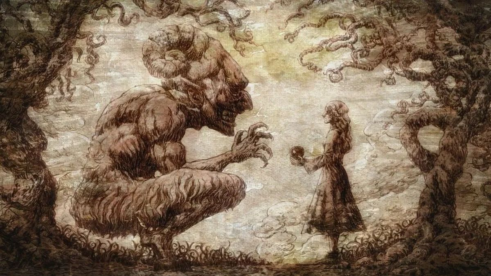

Oeuvre de Hajime Isayama
L’Attaque des Titans est un anime marquant par son intensité dramatique et sa narration complexe. L’univers sombre, oppressant et rempli de mystères capte rapidement l’attention du spectateur. Chaque saison monte en puissance avec des retournements scénaristiques majeurs, tout en explorant des thèmes comme la liberté, la guerre, la manipulation et la survie. L’animation, surtout dans les moments de combat, est fluide et spectaculaire, et la bande sonore amplifie la tension de manière remarquable. C’est une œuvre qui a profondément marqué la culture anime et qui reste une référence dans le genre.
Un autre aspect marquant de l’anime est son approche psychologique des personnages. Les héros comme Eren, Mikasa, Armin ou même les antagonistes ne sont jamais figés dans un rôle unique de “gentil” ou de “méchant”. Chacun est confronté à des dilemmes moraux et pousse le spectateur à réfléchir sur la légitimité de leurs actions dans un monde en guerre. Cette ambiguïté morale rend l’histoire plus réaliste et donne une profondeur rare pour un shōnen.
Auteur: Hajime Isayama
Première publication: 2009
Première diffusion: 2013
Studios: Wit Studio et MAPPA